‘조작조작’은 작은 발걸음으로 잔잔하고 끊임없이 걸어가는 모양을 이릅니다. 비슷한 말로 ‘시나브로’가 있습니다. ‘시나브로’는 모르는 사이에 조금씩 조금씩 변해가는 모양을 뜻합니다. 《평화세상》을 통해 법인의 이야기를 전해드리기에는 ‘시나브로’보다 ‘조작조작’이 더 어울릴 듯합니다.
우리 법인에 몸담은 지도 어느덧 5년이 되었습니다. 그동안 자연스레 법인의 역사를 알게 되었습니다. 오랫동안 묵혀 있던 법인 홈페이지의 ‘연혁’에는 담기지 않은 이야기들도 조금씩 접하면서, 법인의 시작과 걸어온 과정을 조금이나마 이해하게 되었습니다.
과거 큰 선교 사역을 이루어 냈던 우리 법인이 이제 전열을 가다듬고 다시 한번 평화의 날갯짓을 하려고 합니다. 비록 예전만큼 크고 화려한 사업은 아닐지 모릅니다. 그러나 평화는 언제나 작은 걸음에서 시작된다는 사실을 우리는 믿습니다.
“평화는 언제나 작은 걸음에서 시작된다는 사실을 우리는 믿습니다.”
한 사람의 후원이 한 사람의 삶을 일으키고, 한 번의 만남이 공동체를 이어 주며, 작은 관심 하나가 국경을 넘어 희망이 되기도 합니다. 돌이켜 보면 우리 법인이 걸어온 길도 그랬습니다. 처음부터 거대한 단체였던 적은 없었습니다. 이름 없는 이들의 작은 헌신이 모이고, 누군가의 기도가 더해지고, 후원자들의 따뜻한 손길이 이어지면서 오늘의 참된평화를만드는사람들이 세워졌습니다.
지금도 크게 다르지 않습니다. 카자흐스탄의 고려인 어르신들을 찾아가는 일도, 조선족 공동체를 만나는 일도, 청소년들과 함께 평화를 배우는 여정도 모두 ‘조작조작’ 한 걸음씩 이어지고 있습니다. 매주 화요일 성서정과 말씀의 잔치를 통해 말씀을 함께 나누고, 매주 목요일에는 평화나무를 심으며, 매월 넷째 주 금요일에는 회복적정의를 실천하는 모임을 이어가고 있습니다. 어쩌면 우리는 세상을 단숨에 바꾸지는 못할 것입니다. 하지만 한 걸음씩, 쉬지 않고 걸어가는 사람들은 결국 길을 만들어 냅니다.
‘조작조작.’
이 말은 앞으로 《평화세상》이 걸어가고 싶은 길이기도 합니다.
이번 호에는 우리의 작은 걸음들을 담았습니다. 6월 평화교실에서 함께한 이우성 목사의 강의와 홍승만 교수의 자문위원 위촉 소식, 법인 자료와 도서를 생명살림교회로 이전하며 새로운 출발을 준비한 이야기, 그리고 법인 간사 김성국 목사가 전하는 「나의 목회 비서 AI」 강의 소식을 전합니다. 크고 화려한 이야기는 아니지만, 모두 평화를 향해 한 걸음씩 내딛는 우리의 발걸음입니다.
아울러 이번 호부터 《평화세상》은 온라인으로 여러분을 찾아갑니다. 더 쉽고 편리하게 법인의 소식을 전해 드릴 수 있게 되었습니다. 작은 변화이지만, 더 많은 분들과 더 자주 만나기 위한 새로운 시작입니다. 앞으로도 변함없는 관심과 응원을 부탁드립니다.
또한 이번 호부터는 우리 법인의 작은 발걸음을 한 편씩 소개해 드리려고 합니다. 화려한 성과보다 정직한 과정, 큰 업적보다 한 사람의 이야기, 그리고 평화를 향한 작은 실천들을 꾸준히 담아내겠습니다.
오늘도 우리 법인은 조작조작, 평화를 향해 걸어갑니다.
얼마 전 TV 방송에 소개된 한 부부의 이야기가 생각납니다. 아내가 간경화로 인해 간의 70%가 손상되었다고 합니다. 간 이식을 받지 않으면 생명을 장담할 수 없는 위급한 상황에서 남편은 선뜻 자신의 간을 기증하겠다고 나섰습니다. 조직 검사 결과 이식에 문제가 없다는 판정을 받았고, 남편은 자신의 간 70%를 아내에게 이식해 주었습니다. 수술은 성공적으로 끝났고, 지금은 두 사람 모두 건강을 회복하여 행복하게 살아가고 있다고 합니다.
방송 인터뷰에서 진행자가 남편에게 물었습니다.
“어떻게 간을 기증하기로 결심하셨습니까?”
그의 대답은 예상 밖이었습니다.
“혼자 20년을 사는 것보다 아내와 함께 10년을 사는 것이 더 낫다고 생각했습니다.”
흔히 들을 수 있는 “사랑해서요.”라는 대답보다 훨씬 진솔하게 들렸습니다. 어쩌면 이기적인 판단처럼 보일 수도 있지만, 자신의 생명을 걸어야 하는 엄청난 희생을 감수한 결단이었다는 점에서 그의 말 속에는 아내를 향한 全心이 선명하게 드러났습니다.
아내를 위해서라면 자신의 남은 세월마저 기꺼이 내어줄 수 있다는 결연한 사랑이 환한 빛처럼 다가왔습니다. 그 마음에는 결코 僞善이 아니라 진실만이 가득한 全心이 있었습니다. 어떻게 해서든 아내를 살려야 한다는 마음 외에는 다른 생각이 조금도 없었을 것입니다.
얼마 전 어느 설교에서 “전심이 아니면 위선이다.”라는 말씀을 들었습니다. 그 한마디는 제 마음에 큰 충격으로 다가왔습니다.
지금까지 하나님 앞에서(코람 데오) 살아왔다고 생각했던 제 삶이 사실은 전심이 아니었음을 제 자신이 누구보다 잘 알고 있었기 때문입니다.
“전심이 아니면 위선이다.”
그렇다면 지금까지 살아온 제 삶의 많은 부분이 위선이었다는 사실을 부인할 수 없었습니다. 목회자로 살아온 제 자신이 얼마나 위선적이었는지를 생각하니 부끄러움을 감출 수 없었습니다.
제가 최선을 다했다고 여겼던 순간들조차 하나님을 향한 全心이 아니라, 어쩌면 제 자신을 드러내려는 교만이 숨어 있었음을 깨닫게 되었습니다.
하나님께서는 제게 “아이고 이놈아, 언제쯤 그 위선을 벗어버릴 거냐?”라고 수없이 말씀하셨을지도 모르겠습니다. 그러나 저는 그 음성을 듣지 못했고, 깨닫지 못한 채 팔십 평생을 살아왔습니다. 그저 부끄럽고 죄송할 뿐입니다.
그런데 사실 全心, 곧 온 마음을 다한다는 것은 인간의 의지와 한계만으로는 결코 쉬운 일이 아닙니다.
제 짧은 생각으로는 하나님을 향한 全心은 예수님께서 마태복음 22:37에서 말씀하신 “네 마음을 다하고 목숨을 다하고 뜻을 다하여 주 너의 하나님을 사랑하라.”는 말씀에 모두 담겨 있다고 생각합니다.
하나님을 향한 全心은 마음과 목숨과 뜻을 다하는 것입니다. 그러나 평범한 인간에게 그것은 참으로 어려운 일입니다.
그래서 저는 요즘 아침에 일어나면서도, 새벽기도회에 가서도 하나님께 全心을 다하겠다고 다짐합니다. 그러나 하루를 마치고 저녁에 일기를 쓰기 위해 삶을 돌아보면 하나님을 향한 全心과는 거리가 먼 하루였음을 다시 확인하게 됩니다. 그럴 때마다 죄송한 마음뿐입니다.
요즘은 성경 필사를 하느라 하루에 서너 시간을 말씀 앞에 앉아 있습니다. 그것만으로도 조금은 위안을 얻곤 합니다. 그러나 그 시간마저도 온갖 잡된 생각에 마음을 빼앗길 때가 많으니, 이를 어찌해야 할지 모르겠습니다.
그래서 요즘 제가 하나의 말을 만들었습니다.
“하서나.”
‘하나님 앞에 서 있는 나’를 줄인 말입니다.
‘코람 데오’와 같은 의미입니다. 하루를 살아가다가 문득문득 제 자신을 향해 “하서나.”라고 되뇌어 봅니다.
‘지금 나는 하나님 앞에 서 있는가?’
‘지금 나는 全心을 다하고 있는가?’
‘지금 이 순간 마음과 목숨과 뜻을 다하여 하나님을 사랑하고 있는가?’
스스로에게 묻는 것입니다.
이처럼 하나님을 향한 全心으로 살고자 했던 사람이 있습니다. 미국의 제16대 대통령 에이브러햄 링컨입니다.
그는 어린 시절부터 매우 가난하게 살았지만 하나님의 말씀을 떠나지 않았다고 합니다.
그의 가장 큰 위기는 남북전쟁(1861년 4월~1865년 4월) 막바지, 북군이 패전의 위기에 몰렸을 때였습니다. 당시 링컨은 백악관 집무실에서 오직 기도에 전념했다고 합니다.
어느 날 기도를 마치고 나온 링컨에게 한 참모가 물었습니다.
“대통령 각하, 하나님은 지금 우리 편에 서 계실까요?”
얼마나 절박했으면 그런 질문을 했을까요.
그러나 링컨의 대답은 의외였습니다.
“하나님이 우리 편에 서 계신가에는 관심이 없습니다. 다만 우리가 하나님 편에 서 있는가가 더 중요합니다.”
이 말은 처음 들으면 조금 헷갈릴 수도 있습니다.
그러나 분명한 것은 링컨의 기도가 “하나님, 우리 편이 되어 주십시오.”가 아니라 “하나님, 우리가 하나님 편에 全心으로 서게 하여 주십시오.”였다는 사실입니다.
그것이 하나님을 온전히 믿고 의지하며 섬기는 사람의 기도였습니다.
결국 하나님께서는 링컨의 손을 들어주셨고, 그는 노예 해방을 이루고 남북을 하나로 묶은 위대한 대통령으로 역사에 남게 되었습니다.
이제 글을 맺으려 합니다.
오늘 이 글은 다른 누구를 위한 글이 아니라, 전적으로 저 자신을 향한 다짐입니다.
얼마 남지 않은 삶의 여정을 위선자가 아니라 진실한 하나님의 사람으로 살아가고 싶다는 작은 고백입니다.
작심삼일의 대가인 제가 얼마나 오래 실천할 수 있을지는 모르겠습니다. 그러나 적어도 제 마음만큼은 그렇게 살아가고 싶습니다.
부족한 글이지만, 우리 모두가 위선의 탈을 벗고 하나님 앞에서 全心으로 살아가는 사람들이 되었으면 좋겠습니다.
1990년대 초부터 2019년 2월 하노이 회담까지, 북한의 핵은 ‘미국과 관계 정상화’를 위한 협상 카드였습니다. 그러나 하노이 회담 결렬 이후 ‘새로운 북한’은 관계 정상화라는 목표 자체를 수정하기 시작했고, 핵을 협상 카드가 아닌 국체(國體)로 삼는 방향으로 전환 했습니다. 이 전환의 공식 선언이 바로 북한의 ‘적대적 두 국가’ 규정입니다. 이로 인해 기존의 거시적이고 국가 중심적인 ‘통일’ 담론은 길을 잃게 되었습니다.
여기에 더해 2024년 북한의 러시아 파병은 한반도 안보 지형을 근본적으로 뒤흔들었 으며, 북한은 2025년 4월 이를 공식 인정했습니다. 김동엽은 이러한 현실을 직시하며, 남북을 이제 두 개의 별개 국가로 전제하고 통일이 아닌 평화 만들기를 논의해야 한다고 말합니다. 청년세대 76%가 통일이 필요하지 않다고 생각한다는 여론조사 결과는, 이 변화가 이미 우리 사회 깊숙이 침투해 있음을 보여줍니다.
통일이 이미 멀어진 시대를 직면하지 못하고, ‘통일을 위해 기도합시다’라고 하는 것은 공허합니다. 현실을 직시하지 못한 구호는 오히려 교회의 신뢰를 실추시킵니다. 그렇다고 평화를 포기하는 것은 복음 자체를 포기하는 일입니다. 정치는 막혀있고, 당국 간채널은 끊겨 있기 때문에, 오히려 민간단체가 사회문화 교류 협력을 주도해야 합니다. 정치, 군사 문제와 분리해서, 비정치적 영역에서의 접촉을 지속해야 합니다. 교회가 바로 여기에 있습니다.
이 발표의 목적은 당대의 ‘새로운 북한’을 마주하고 북한과의 대화를 시작했던 홍동근 목사의 삶을 소개하는 것입니다. 먼저 연구사를 정리해보면, 참된평화를만드는사람들의 전신 격인 한민족 평화연구소에서 홍동근 목사 추모 기념논문집을 냈는데, 거기에서 금주섭 박사는 “눈물의 선지자 홍동근, 그의 통일신학”이라는 글을 발표했습니다. 금주섭 박사가 에딘버러에 제출한 박사학위 논문은 “남은 자와 회복: 교회와 국가 틀로 바라본 북한 개신교 역사 (Remnants and Renewal: A History of Protestan Christianity in North Korea, With Special Reference to Issues of Church and State, 1945-19”입니다. 이 논문의 감사의 글에서 특별히 홍동근 목사께 감사하는 것은, 많은 자료를 당시 북을 오가던 홍동근 목사 로부터 받을 수 있었고, 미비한 자료를 증언으로 극복할 수 있었기 때문입니다. 금주섭 박사는 “민족의 수난과 현대사의 질곡을 온 몸으로 짊어지고 자신의 몸을 분단의 아사셀 양으로 바친 눈물의 선지자”라고 홍동근 목사를 소개했습니다. 또하나의 의미 있는 발표는 이전에 미국장로교 한국선교회 화해 평화 좌담회에서 노정선 교수가 미완의 귀향일기의 내용을 중심으로 홍동근 목사의 삶을 다섯 단계로 나누어 소개한 발표입니다. 노정선 교수는 영락교회 출신으로, 중고등학생 때부목사로 부임한 홍동근 목사를 만났습니다. 그가 기억하는 홍동근 목사는 영락교회에서 흑인해방을 지지하는 설교를 많이 하는 분이었고, 친정부 편에 설수 없어 영락교회와 그리고 한경직 목사와 결별한 분이었습니 다. 홍동근 목사를 소개한 두 발표가 의미 있지만, 여전히 이 분야에서 다양한 연구 시도가 필요합니다. 홍동근 목사의 삶전반을 다룬 연구는 아직까진 시도되지 않았습니다. 홍동근 목사를 비롯하여 이 시기에 통일운동에 기여했던 사람들이 주목을 받지 못하는 것은, 과거에는 시대적 제약과 반공주의적 편향성 때문이었고, 오늘날에 이르러서는 사료의 부족과 이미 부정 적으로 수행된 평가 때문입니다.
노정선 교수가 이 발표를 2016년 9월 7일에 하셨는데, 공교롭게도 이 즈음, 백경천 목사가 제게 신학을 권하셨습니다. 그리고 저는 2017년부터 3월부터 신학을 공부하게 되었습니다. 신학교에 입학해서 처음으로 한 일이 백경천 목사의 부탁을 받아 도서관에 가서 홍동근 목사에 관련된 책과 글을 찾고 빌려서 갖다 드리는 일이었습니다. 아마 백경천 목사가 아니었으면 존재조차 알수 없었던 책, 미완의 귀향일기를 책장에서 찾아내고, 창고 같은 보존서고에서 만지면 바스러지는 70년이 된“혁명시대의 교회”를 찾아냈습니다. 그리고 300쪽이 넘는 홍동 근목사의 박사학위 논문을 도서관 구석에서 복사했습니다. 그때만 해도 갖다 드리는 길에 슬쩍 읽어보는 정도였습니다.
신대원 2학년이 되면서 저는 강화도 심도학사에서 1년간 장학프로그램에 참여하게 되었습 니다. 서강대 종교학과를 은퇴한 길희성 교수가 교단 신학교 별로 두 명씩 불러서, 1년간 성실하게 따라오면 200만원의 장학금을 주는 프로그램이었습니다. 그런데 길희성 교수가 늘하 시는 말씀이 “나는 불교를 공부했고, 불교로 대한민국 학술원 회원이 되었지만, 평생 그리스 도인으로 살았다.”는 것입니다. 노정선 교수의 부모처럼, 길희성 교수의 부모도 영락교회를 세운 핵심 교인이었습니다. 그런데 길희성 교수는 단한번도 한경직 목사의 설교를 들으며 감동 한 적이 없고, 성장하면서 기독교를 떠날 생각을 품고 있었습니다. 그때 홍동근 목사가 영락 교회 부목사로 부임해온 것입니다. 당시 길희성 교수는 서울대 철학과에서 수학하고 있었는 데, 홍동근 목사를 통해 기독교와 사회사상에 관심을 가지게 되었고, 홍동근 목사의 집에 밤낮으로 드나들다가 신학을 결심하게 되었습니다. 처음엔 장로회신학대학을 고민했으나, 그의 이모부 박창환 학장의 권유로 예일 대학 신학부로 유학을 떠났습니다. 이후 한 종교학자의 강의를 들으며, 하버드에서 불교연구로 박사를 마쳤지만, 한평생 그리스도인으로 살며, 그리스도 교를 떠날 수 없었던 것은 홍동근 목사 때문이라고 증언했습니다. 오늘 우리에게 그리스도교 란무엇이고 또그리스도인은 누구인가 하는 홍동근 목사의 고민이 청년 길희성에게 전해졌던 것입니다. 길희성 교수는 각 교단에서 프로그램에 참여한 신학생들에게 “홍동근 목사를 모르고 남에서 신학을 하며 살아갈 수 없다”고 단언했습니다.
이 말의 의미를 백경천 목사의 “홍동근을 찾아 떠나는 여정”을 통해 조금 더자세히 밝힐 수 있습니다. 백경천 목사는 “홍동근을 찾아 떠나는 여정”에서 <통일을 위한 신학>과 <통일 후에 남북인이 함께 공유할 수 있는 한국신학>을 고민하는 사람들을 만나고자 했습니다. 홍동근 목사의 삶에 대한 연구를 통해 우리는 두 가지 의미를 발견할 수 있습니다. 첫째로 “평 화를 만드는 신학”입니다. 그 자체로 “분단 시대, 나아가 적대적 두 국가 시대, 그리스도인은 누구인가?”에 답하는 연구입니다. 그런 의미에서 길희성 교수는 분단을 망각한 한국 신학은 있을 수 없고, 그렇기 때문에 “평화를 위해서” 남측의 신학생은 홍동근 목사를 알아야 한다고 한 것입니다. 두 번째로 홍동근 목사의 삶에 대한 연구를 통해, “남북인이 함께 공유할 수 있는 한국 신학”을 준비할 수 있습니다. 홍동근 목사는 남북이 함께 기념할 수 있는 몇 안 되는 목회자입니다. 세계 2차 대전 이후, 역사적으로 남한 교회는 냉전이데올로기에 갇혀 북측과 해외동포를 배제한 신학과 역사서술을 해왔습니다. 조금 더자세하게 말하면, 한국기독교교회 협의회(NCCK)가 민주화운동에 핵심 역할을 했지만, 통일에 대한 문제가 대두되었을 때, 세계 교회협의회(WCC)와 반공주의적 경향을 공유하며, 그 입장이 “선민주 후통일”로 귀결되었습니 다. 이는 자신들과 뜻을 달리한 절반의 해외동포들에 대한 배제, 나아가 북에 대한 배제로 이 어졌습니다. 그러나 홍동근 목사의 표현대로 “통일의 신령을 받은 사람들”이 먼저 경계선을 넘었고, 대화를 시도했습니다. 남과 북이 각자의 입장을 넘어 대화하며 함께 다룰 수 있는 한 주제가 홍동근 목사와 해외동포들의 노력입니다.
홍동근 목사에 대해 좋은 평가를 내려주는 사람은 드물었습니다. 단편적인 언급이지만, 대부분의 사람들은 홍동근 목사를 감상적이고 김일성에게 매료된 친북인사로 평가하고 있습니 다. 그러나 이러한 평가는 섣부르고 성급한 평가입니다. 그 이유는 다음과 같습니다. 먼저 홍동근 목사가 어떤 삶을 살았는지 잘모르는 단계에서 내려진 평가이고, 두 번째로 WCC와 NCCK가 제공한 반공주의적 틀을 가지고 내려진 평가이며, 세 번째로, 숨은 역학적 요소를고 려하지 못한 채고착화된 평가입니다.
홍동근 목사는 삼대째 기독교인으로 평안북도 피현면에서 태어났습니다. 그의 할아버지 홍서락(토마스)은 1900년에 성체성사를 받아 천주교에 입교했고, 1905년, 그의 집에 공소를 마련하며 시작한 모임이 훗날 1500여 명의 공인을 두고, 공소 10개소가 소속되어 있는 피현 천주교회가 되었습니다. 그러나 홍동근 목사의 아버지는 개신교 신자가 되었습니다. 경성의 학전문학교를 졸업하여 의사가 되었는데, 3.1운동에 참여했다가 만주 망명 후고향 피현으로 돌아와 의원을 세워 일하는 한편, 독립군 자금조달 피현면 책임자로 활동했습니다. 그가 활동했던 조직은 김일성의 아버지 김형직이 세운 조선국민회였습니다. 홍동근 목사는 아버지의 개종을 보수적이고 친일적인 천주교에 비해 민족주의적 운동이 가능했던 개신교의 풍토 때문이라 추측했습니다. 홍동근 목사의 아버지는 1937년에 돌아가셨는데, 장례는 “피현면 사회 장”으로 치뤄졌습니다. 일본제국주의 침략전쟁에 학병들이 동원되던 1943년, 17살이었던 홍동근 목사는 압록강을 건너 만주로 갔습니다. 그리고 봉황성에서 보조교사가 되었습니다. 거기서 운명적으로 독립운 동가 김례진 목사를 만나게 되었습니다. 홍동근 목사는 그를 통해 민족주의와, 애국신앙의 세 례를 받았습니다. 김례진 목사는 1898년 생으로, 1918년 평양숭실대학교 2학년 때, 애국연설을 하다가 조선총독부로부터 무기정학을 당하고 1919년 복교하였습니다. 그러나 3.1운동 때주동 역할을 하다 체포되었습니다. 이후 김례진 목사는 김구를 따라 상해 무장투쟁노선에가 담하였습니다. 1920년엔 임무를 받아 밀입국하여 평안남도 도청을 폭파하고 종신수가 되었 다가, 감형되어 석방되었으나, 그의 독립투쟁은 멈출 줄몰랐습니다. 결국 상해 일본영사관에 폭탄을 던져 15년 형을 받아 투옥되었습니다. 그러다 가석방이 되었고, 신학을 공부하여 전도 자가 되었습니다. 목사가 되고 방법은 바뀌었지만 그의 독립의지는 신앙으로 더욱 견고해졌습 니다. 신사참배 반대로 용천으로 쫓기고, 조선에 발붙일 곳없어 만주까지 쫓겨났고, 그렇게 쫓겨 온 봉황성교회에서는 설교권마저 빼앗겨 콩나물장수가 되었습니다. 홍동근 목사가 일 찍이 김례진 목사로부터 배운 것은 신앙과 나라사랑이, 교회와 사회가 분리되지 않는다는 것입니다.
1945년 9월 홍동근 목사는 조국으로 돌아왔습니다. 당시 마을마다 인민위원회가 조직되 고, 사회주의 혁명과 건설을 외치는 사람들이 있었습니다. 홍동근 목사는 봉황성에서 보조 교사로 일했던 경력 덕분에 피현면 소학교에 교원으로 채용될 수 있었습니다. 공산주의 물결 이 온 마을과 학교를 뒤덮었었지만, 홍동근은 공산주의를 알기 전에 성경과 기독교에 대해 알아야하겠다는 생각을 품고 있었습니다. 그리고 마침 김인서 장로가 강사로 나온 “부흥사경회”에 참석하게 되었습니다. 밤마다 부흥사들은 새 나라에 새 일꾼을 불렀습니다. 홍동근 목사도 여기서 일어나 “천국 노동자”가 되어 복음전도를 위한 사역자가 되기를 다짐했습니다. 1946년에는 많은 기독교인들이 땅을 빼앗긴 토지개혁이 일어나고, 일요선거 사건이 있었 습니다. 이로 인해 선거를 반대하는 이북5도 연합노회와 찬성하는 사람들로 새롭게 조직된 기독교도연맹 사이에 대결구도가 생겨났습니다. 홍동근 목사는 이 당시 억압적이고 폭력적인 군중들을 보며, 공산주의 혁명에 대해 의문과 실망을 품게 되었습니다. 청소년기 홍동근 목사의 사고를 형성하는데 영향을 미쳤던 인물들은 책을 통해 접했던 가가와 도요히꼬, 톨스토 이 등이었고, 고상한 정신과 영혼의 만족을 구하는 기독교에 매력을 느꼈습니다. 당시 교회의 목사와 장로들은 공산주의에 대해 반대를 넘어 미움까지 표하며, 무신론, 기독교의 사랑의 교리에 정면으로 반대할 뿐만 아니라, 민족을 분열시키는 것으로 교회가 동조할 수 없다고 가르쳤습니다. 홍동근 목사는 미움보다 용서를, 공산주의보다 민족주의를, 혁명보다 사랑을, 계급투쟁보다 평화를 실천하는 것이 진정한 혁명이고 새 나라, 새 세상, 하나님 나라의 구현이라 믿었습니다. 이러한 사상은 교사인 그의 교육내용에서 드러났고, 결국 피현인민학교에서 면직되었습니다. 이를 계기로 홍동근 목사는 평양으로 가서 평양 신학 교예과에 입학했습니다. 당시 평양신학교 교장은 장대현교회 김화식 목사였고, 이유택, 김영 윤, 이기주, 변린서 목사가 강의를 했습니다. 신학교 분위기는 사회주의 정권과 교회의 공존을 인정하지 않았고, 홍동근 목사의 표현대로 “전투적 반공 신앙”을 가지고 있었습니다. 일요선 거사건을 계기로 이북5도연맹과 대립하게 되었던 기독교 연맹에는 강량욱, 김익두, 박상순, 배덕영 목사 등이 있었는데, 이들은 교계 내에서 배신자 취급을 받고 매도당했습니다. 홍동 근목사는 이 때부흥회와 기도회 등을 떠올리며, 신도들을 웃고 울리며 성서주해와 해석은 뒷전으로 한 현실적 정치사회 상황에 대한 반공적 응답이었다고 회상했습니다. 그해 5월 예과를 졸업한 홍동근 목사는 고향 피현으로 돌아왔지만, 여름에 아동성경학교를 개최하면서 체포령을 받아 남행을 택했습니다.
“미움보다 용서를, 공산주의보다 민족주의를, 혁명보다 사랑을, 계급투쟁보다 평화를 실천하는 것이 진정한 혁명이고 새 나라, 새 세상, 하나님 나라의 구현이라 믿었습니다.”
— 홍동근 목사신학 공부를 이어가고자 했던 홍동근 목사는 먼저 내려왔던 김례진 목사의 아들 김동수의 권유로 조선신학교 대신 서울신학교에서 1년을 보내게 되었습니다. 1948년 6월, 만주에 있던 박형룡이 돌아와 장로회신학교가 설립되자 홍동근 목사는 장로회신학교에 진학했습니다. 홍동근은 여기에서 칼빈주의와 성서의 무오성을 내세우며 자유주의적 이단이 난무하는 가운데 순수한 복음적 기독교를 지킨다는 근본주의적 신학을 공부했습니다. 그 내용은 쉴라이에르마 허의 신학과 성서의 고등비평, 칼바르트와 에밀 부룬너의 신정통주의 신학, 미국의 사회복음 신학과 니버의 사회윤리학, 그리고 에큐메니칼 운동에 대한 비판이 전부였습니다. 1950년 5 월홍동근 목사는 장로회신학대학 3회 졸업생이 되었습니다.
전쟁이 시작되고 홍동근 목사는 김동수를 따라 제주도로 피난을 갔습니다. 제주에서 홍동근 목사는 사회복음의 세례를 받게 되는데, 여기엔 두 가지 사건이 영향을 미쳤습니다. 먼저 홍동근 목사는 제주로 피난 후, 김능근 장로와 ‘서귀포 피난민 봉사학원’을 만들어 전후를 대비하는 교육에 힘썼습니다. 여기서 이재면 목사를 만나게 되는데, 성경을 믿지 말고 ‘그리스 도’를 믿으라는 충고를 받았습니다. 두 번째는 제주 4.3과의 만남입니다. 홍동근 목사는 제주 4.3 희생자들의 유가족들을 만나며, 미국과 그의 하수인 남측 정부, 그리고 반공주의로 무장한 서북청년단의 횡포를 알게 되었습니다. 홍동근 목사의 이력서에 따르면, 1953년 황동노 회에서 목사안수를 받았습니다. 이 시기를 정리해보면, 홍동근 목사는 부흥회를 통해 뜨거 운신앙체험을 하며 목사가 되기로 결심했습니다. 어린 시절부터 고상한 정신세계에 사로잡혔 으며, 독립운동가 아버지를 두고 있었기에, 민족주의적이면서 영혼구원에 관심을 두는 신학이 형성되었습니다. 이러한 사고는 남산장로회신학교에서 절정에 이르렀으나 제주에서의 피난 경험으로 그의 사고는 다음 단계로 나아가게 됩니다.
홍동근 목사는 1955년 미국 유학을 가게 되었습니다. 뉴욕 비블리컬 신학교를 졸업하고, 유니온신학교 대학원에서 성서신학을 연구했는데, 이 시기에 그의 사회참여적 기독교의 새지 평을 발견하게 되었습니다. 뉴욕에서 홍동근 목사가 접하게 된신학자들은 월터 라우쉔부쉬, 칼바르트, 에밀 부룬너, 라인홀드 니버, 존베넷트, 로버트 핸디, 그리고 디트리히 본회퍼의 옥중서신과, 마틴 루터 킹목사의 흑인해방운동을 접하게 되었습니다. 홍동근 목사는 이전에 자신을 “천국 노동자”로 불렀던 복음의 수직적 차원과 수평적 차원이 종합되는 경험을 했습니다. 이를 통해 기독교 신앙은 궁극적으로 그리스도의 화해와 복음을 통해 개인의 영혼이 구원받고 사회가 해방되는 하나님나라 실현을 이루는 것으로 이해하게 되었습니다.
1958년 귀국한 홍동근 목사는 광주 신학교에서 신약학을 가르쳤습니다. 이후 대광고등 학교 교목을 거쳐 영락교회 부목사가 되었습니다. 서울로 올라오면서 장로회신학대학교에서 기독교사회윤리 과목을 강의했는데, 홍성현 목사의 증언에 의하면, 라인홀드 니버를 주로 소개했다고 합니다. 홍동근 목사의 설교집 “혁명시대의 교회”에서 알수 있듯이 당시 한국 사회는 4.19와 5.16이라는 격변의 시기를 맞이하고 있었습니다. 그리고 이 시기에 세상을 변혁 하는 그의 목회관이 드러납니다. 1963년 12월 박정희는 일본의 자본을 통해 경제 개발을 추진하고자 한일국교 정상화를 서두르려 했습니다. 반대운동에도 불구하고 1965년 6월 한일 협정이 채결되자, 강신명, 강원룡, 김재준, 한경직 등 215명의 교회지도자들이 영락교회에 모여 구국기도회를 열고 반대성명서를 발표했습니다. 이때 함께 우정을 쌓았던 사람이 초동교 회부목사였던 박형규입니다. 이들은 박정희 군사정권의 횡포와 타락을 비판하고 감시하며 저 항하는 교회세력 구축과 반대성명서 작성에 큰기여를 했습니다. 한편 신학생 백여 명이 한일 회담 반대 시위에 참여했는데, 홍성현 목사는 홍동근 목사로부터 영향을 받은 것이라 증언했 습니다. 그런데 중앙정보부의 회유로 한경직 목사가 등을 돌리면서 홍동근 목사는 조용히 사임한 후도시샤 대학에서 수학한 것으로 보입니다.
귀국한 홍동근 목사는 동신교회에서 목회를 하며 한국기독교교회협의회 산업선교회에 참 여하고, 장로회신학대학에서 기독교윤리 강의를 이어갑니다. 이 시기에 특기할만한 것은 황광은 목사와의 우정입니다. 황광은 목사의 고향은 평안북도 용천이었고, 홍동근 목사와 세 살차이로 비슷한 또래였는데, 예민한 감수성과 허약한 몸으로도 가난한 자들의 벗이 되어 옷과 신을 벗어주고, 고아와 거지를 집으로 초대하여 동고동락했습니다.. 홍동근 목사는 이런 황광은 목사를 예언자적 크리스천, 양심적 시대인, 성실과 헌신으로 일관하셨던 참 지도자로 평가했습니다. 홍동근 목사에게 세상을 변혁하는 목회는 확고한 이념이나 탁월한 사상으로 하는 것이 아니라, 황광은 목사와 같은 예언자적 영성을 지녀야 할수 있는 것이었습니다. 훗날 통일운동에 헌신할 수 있었던 것도 그가 예언자적 영성을 동경하는 목사였기 때문입니다.
1970년, 홍동근 목사는 교토한인교회에서의 목회를 시작합니다. 교토한인교회는 한인교회 임에도 해방 후동족 목사가 부임한 것은 처음이었습니다. 홍동근 목사는 일본사회에서 소수자 집단에 속하는 재일조선그리스도인의 이중고를 보게 되었습니다. 재일조선인이라서 겪은 소외와 일본에서 그리스도인이 겪는 소외를 이중으로 겪는 사람들이 재일조선그리스도인이었 습니다. 풀러신학교(Fuller Theological Seminary)에서 작성한 박사 논문 “바빌론의 강가에 서: 재일조선인을 위한 선교전략(By The Rivers of Babylon: A Mission Strategy For The Korean Minority in Japan)”은 이런 배경에서 작성되었습니다. 홍동근 목사는 억압받는 동포를 돌보는 것에서 재일한인교회의 의미를 크게 발견했고, 재일조선그리스도인이 화해의 사도로서 억압자 일본을 용서하는 것을 “값비싼 은혜”의 실현으로 여겼습니다. 교토한인교회에서의 목회 경험은 두 가지 의미에서 또하나의 관문이 되었습니다. 첫째 로, 한반도 밖에서 분단을 경험하며 국내보다 조금 이른 시기에 문제의식이 시작되었습니다. 해방 이후 일본에 남는 것을 선택한 약육십만 명의 조선인은 미군정의 적대를 경험하며, 동포의 생명과 재산, 권리를 보호하기 위해 1945년 10월 재일조선련맹(조련)을 조직했습니다. 그러나 신탁통치문제가 붉어지며 한반도에서의 분단이 일본 내조선인들을 반으로 갈랐습니 다. 1946년 10월 조련에서 이탈한 반공주의 청년들은 재일조선거류민단(민단)을 조직했습니 다. 재일조선인 안에서도 분단이 반복되었고, 분단에 대한 문제의식을 갖게 되었지만, 이때까 지만 해도 홍동근 목사는 조총련 사람들을 만나면 비자 갱신에 어려움을 겪을 수 있어, 주로 민단 측에 속한 사람들과 교류했습니다. 교회는 민단 측에서 있었으며, 민단은 남측 정부 영향 아래 있었습니다.
둘째로 1970년대를 다른 공간에서 경험한 것, 즉, 한반도 안에서 겪지 않은 것입니다. 1974년 민청학련 사건과, 아홉 차례 내려지는 긴급조치를 홍동근 목사는 직접 경험하지 않았 습니다. 1970년대 한국 개신교는 극명하게 나뉘었는데, 이는 두 가지 다른 기도회로 드러났 습니다. 조찬기도회에 반대편에서 이루어진 목요기도회 참여자들과 홍동근 목사의 신학은 크게 다르지 않았습니다. 그러나 “평화”와 “통일”을 입에 담기 어려웠던 국내 상황에서 목요기 도회 참여자와 지지자들은 “선민주 후통일”로 굳어져 갔지만, 다른 공간 경험은 홍동근 목사가 민주화 운동 인사들과 다른 길, 통일 대화에까지 나아갈 수 있는 하나의 조건이 되었습 니다.
1974년 홍동근 목사는 미국에서 선한사마리아인교회를 개척했습니다. 이 시기는 해외민 주화운동이 활발해지는 시기였는데, 홍동근 목사를 이해하려면 이 흐름을 살펴볼 필요가 있습 니다. 1973년 남산 부활절 사건으로 박형규 목사가 구속되고, 같은 해7월, 도쿄에서 오재식, 강문규, 지명관, 박상증, 림순만, 동원모, 이상철 등이 모였습니다. 이들은 일본, 미국, 독일 에서 에큐메니컬 네트워크를 통해 국내 민주화운동을 지원했습니다. 1973년, 오재식, 지명관, 김용복에 의해 작성되고 서울로 보내졌던 <1973년 한국 그리스도인 선언>은 유신체제에 정면 도전으로 받아들여졌고, 이후 긴급조치가 발표되었습니다. 이 시기에 한국민주회복통일촉진국민회의(한민통)가 일본에 이어 미국에서 결성되었습니 다. 독일에서는 재독 한국민주사회건설협의회(민건회)가 1974년에 결성되었고, 미국에 있는 인사들과 활발하게 교류했습니다. 그런데, 1974년부터 해외 운동은 분열의 조짐을 보입니다. 이 구도가 복잡하여 미국만 놓고 보려합니다. 먼저 김대중 납치 이후 의장을 뽑는 자리에서 김재 준, 김상돈의 계열과 림창영, 선우학원 계열이 나누어졌습니다. 그 원인은 민주화와 통일운동 가운데 어느 것에 중점을 둘것인가에 대한 이견이 있었기 때문이었습니다. 선민주 후통일을 주장하던 세력은 한민통을 한국민주화운동연합운동으로 이름을 바꾸고 민주주의 국민연합과 통합하여 한국민주회복통일촉진국민연합(민통연합)을 결성했습니다. 김상돈으로 대표되는 미국 서부 보수세력은 김재준을 내세웠고, 그를 의장으로 선출했습니다. 전반적으로 재미 교포들은 통일운동을 위험하게 여겼으므로 민주화운동을 하면서도 통일문제에 대해 시기상조라 생각했습니다.
선우학원이 김재준의 출마를 만류했으나, 김재준이 의장이 되며 한민통 미주본부는 재일 한민통과 전혀 다른 조직, 김재준 표현대로 “동명이질”이 되었습니다. 선우학원에 따르면, 미주에서의 민주화운동의 분열은 이념과 사상보다는 김재준과 림창영을 따르는 인사들끼리 서로 연합하지 못했기 때문이라고 했습니다. 결국 림창영을 따르는 인사들은 “재미민주한인협 회”(민협)을 조직하여 한민통과 별개로 활동했습니다. 미주 민주화운동이 끝내 연합하진 않지 만, 김재준, 김상돈과 림창영 박사의 그룹의 반복되는 대립에 전환을 가져온 것은 홍동근 목사였습니다. 홍동근 목사는 1974년부터 조국민주회복남가주국민회의에 참여하며 김상돈, 차상 달, 국영길과 함께 활동했습니다. 그러나 계열에 치우치지 않고, “동부에서의 연합운동에 적극 동조하여 연합함이 우리의 임무로 알고 동부의 기구에 서부 및기타 지역에서의 단체를 연합 하는 기구를 탄생시키는 준비 작업으로 대표자 모임을 가짐이 어떨까 생각합니다”하고 제의했 고, 그 결과 대화(토론)가 시작될 수 있었습니다. 동부 림창영 계열과 서부 김상돈 계열의 계속되는 반목에서도, 홍동근 목사는 열린 태도로 평화영성가로서의 면목을 보였습니다.
한편 1977년 8월 재일한민통은 북미주, 유럽, 일본을 연결하는 “민주민족통일해외한국인 연합회”를 결성했습니다. 독일 민건회는 한민련 가입을 결의했는데, 민건회는 이를 계기로 분열하게 되었습니다. 해외에서 민주화 운동의 분열을 일반화할 수는 없지만, 공통된 요소를 발견할 수는 있습니다. WCC의 에큐메니컬 네트워크에 속하거나, 관련 인사들과 친분이 있는 경우 반공주의적 틀을 벗어나기 어려웠습니다. 또한 국내로 돌아가고자 하는 인사들이거나 국내와 긴밀하게 관계가 되어있는 인사들의 경우 통일에 대해 조심스러운 태도가 발견됩니다. 한 편독일의 민건회에서 한민통과의 연대를 주장한 이화선, 이영빈, 김순환 계열, 미주에서는 “선 통일 후민주”가 아니라, 민주화와 통일을 같은 선상에 올려놓았던 홍동근을 비롯하여, 선우학원, 김성락, 차상달 등이 해외교포 통일운동의 선구자가 되었습니다. 이들이 통일대화를 주장한 것은 국내외 인사들이 광주의 참상을 겪으며 ‘회심’하기 전이었습니다.
1978년에는 “조국통일기독자회”(기통회)가 유럽, 미국, 캐나다 동포 34인의 이름으로 기독교평화회의(CFK)를 통해 북한에 편지를 보내고 2년 뒤인 1981년, 북과 해외동포 기독자 간대화가 시작되었습니다. 1970년대 중반부터 활발해진 해외교포들의 방북이 이어졌는데, 1981년 북과 해외동포 기독자간 대화를 준비하기 위해 기통회의 대표 이화선, 이영빈, 김순환 이 6월에 방북하고, 또홍동근 목사도 이 시기에 처음 방북을 했습니다. 그 내용은 미완의 귀향일기에 자세하게 기록되어 있습니다.
홍동근 목사는 이 경험을 통해 북한 그리스도인을 한반도의 “남은 자”로 인식했습니다. 자신을 포함하여 많은 교회 지도자들이 양떼를 버리고 떠난 것을 신앙의 변질로 보았습니다. 홍동근 목사의 회개는 남을 향해 내려온 것에 대한 돌이킴이었기에 회개 이후 남은 생애를 북측의 그리스도인을 위해 살았다고 해도 과언이 아닙니다. 금주섭은 홍동근 목사가 한 기여로 최초로 북녘에 남겨진 기독인들의 삶에 신학적 의미를 부여하고 역사적 경험을 성서적 해석에 비추어 재해석했다는 점을 꼽았습니다. 홍동근 목사는 조국을 떠난 것에 대해 죄책감을 느끼며, 미력하게나마 한반도의 자주통일과 민주화를 위해 국내의 투쟁을 도왔습니다. 그의 노력은 자신이나 속한 집단을 위한 것이 아니었기에 누구든 이 흐름에 합류할 수 있었습니다. 홍동근 목사는 남한의 처지를 충분히 이해하면서도, 해야할 일을 했습니다. “우리는 국내 교회와 그리스도인들이 아직 반공법에 묶여 있을 때, 대신 북의 가족을 찾아가고 그곳에 동역자인 목사, 신도들을 방문하여 성도의 교제를 회복했습니다.”
또한 그가 이후 쓴논문들은 그의 신앙고백일 뿐만 아니라, 북의 교우들을 의식한 것이 라고 했습니다. 북측에 “남은 자”를 찾아내고 기념하며, 이들과 교류를 시작한 것이 홍동근 목사를 비롯한 해외교포 기독자들의 첫 번째 기여입니다.
두 번째 기여는 북측에 “보이는 교회” 건설의 필요성을 알린 것입니다. 해외 동포 중교 회건설의 필요성을 가장 먼저 강조한 사람은 홍동근 목사였습니다. 홍동근 목사는 1984년 4월 김일성 주석에게 편지하여 보이는 교회당 건설과 북에서의 연구사업, 목사들의 방북 등을 건의했습니다. 또한 1985년 김정일 비서에게도 편지하여 세계교회와의 연대를 고무하며 보이는 교회 건설을 제안했습니다. 1984년 조국평화통일위원회가 홍동근 목사에게 보낸 편지에서 알수 있는 대목은 북한에서 교회당을 건설하는 것은 재정문제가 아니라는 사실입니다. 1981 년평양 방문 당시, 홍동근 목사가 고기준에게 왜교회를 복구하지 않느냐 물었더니, “인민의 반감과 불신 때문에 아직 공개적 교회 건축을 감히 제안하지 못한다고 했습니다.” 1985년 세계교회의 방북 이후 홍동근 목사가 속한 통일신학동지회는 다시 김일성 주석에게 편지하여 세계교회 대표단이 다녀갔는데 보이는 교회가 없었던 것을 말하며, 교회는 평화와 자유에 기여한다고 설득했습니다. 1988년, 사회주의 북측 땅에 세워진 교회는 해외 기독자들의 10년 대화의 작은 열매이며, 북측의 한 그리스도인 형제는 북에서 교회 건설이 홍동근 목사 덕이라 고백했습니다. 평양시 만경대 구역 봉수동에 위치한 봉수교회는 남과 북이 대화가 시작되고 7년 만에 세워졌습니다.
셋째로, 홍동근 목사를 비롯한 독일과 미국의 해외 교포들이 반공주의의 맹공을 뚫고 직접 대화를 시도했다는 것은 통일운동사에서 상당히 큰기여입니다. 대화를 통해서 상호 신뢰가 조성되었고, 서로 이해하는 수준이 높아졌습니다. 이 대화에 참여한 인사들은 해를 거듭할 수록 옛 친구를 만나는 기분이라 했습니다. 이러한 과정에서 김일성 대학에 종교학과가 신설되었고, 홍동근 목사는 초빙교수가 되었습니다. 북측 인사들은 그를 통해 기독교를, 또한 동포들은 그를 통해 주체사상을 배웠습니다. 이러한 과정이 서로 전혀 관련 없다고 여겨지던 주체사상과 기독교를 연결시켰습니다. 홍동근 목사는 주체사상과 민족주의가 아니면 기독교에 미래가 없다고 말함으로써, 거꾸로 기독교와 연결하지 않으면 주체사상도 미래가 없다고 말하게 되었습니다. 북의 사회과학사전에 있는 종교에 대한 해설도 “아편”에서 “사회발전에 공헌할 수 있다.”로 바뀌었습니다. 또한 대화로 오가는 것은 말뿐만이 아니었습니다. 홍동근은 공동번역성경, 신약성서주석전집, 해방신학, 민중신학, 신학교과서 등을 가지고 들어갔습니다. 평양신학원에는 “홍동근 서가”가 있습니다.
넷째로, 북측과 남측, 그리고 세계교회의 입장의 변화를 촉구한 점입니다. 박순경 교수는 북한에서 홍동근 목사를 통해서 개신교도 사회적 관심이 있구나 하는 것을 알게 되었다고 했습니다. 홍동근 목사의 강의를 통해 공산당 간부들과 김일성 대학의 교수들이 기독교의 새 로운 면을 발견하고 놀라워했으며, 주체사상과 분명히 다른 것이 기독교에 있다는 것을 스스로 말하기 시작했습니다.
또한 남측에서의 변화도 이끌어냈습니다. 박형규 목사는 다음과 같이 고백했습니다. “국내외 운동은 인권과 민주화에 집중되고 통일에 관해서는 언급조차 하기 어려운 시기였으므로 우리는 이 소문(재미교포들 사이에서 북한에 방문한 사람 중홍동근 목사가 끼어있고, 그 래서 친북파로 낙인 찍혔다는)에 당혹감을 느낄 수밖에 없었다. 독재의 원인이 분단에 있고, 분단의 극복 없이는 진정한 민주화와 인권보장도 있을 수 없다는 것을 알면서도 우리의 현실은 우선 민주화를 쟁취하기에 급급했던 것이다. ... 민주화, 인권, 통일을 위한다고 하면서나는 여전히 냉전논리와 반공 이데올로기에 사로잡혀 있었던 것이다.”
1981년 독일교회와의 모임에서, 그리고 이전부터 통일에 대한 논의는 있었지만, 북측과 직접 만남을 고려하진 못했습니다. 그런데 해외교포들이 북측과 직접 만나면서 NCCK를 중심 으로한 에큐메니컬 네트워크도 서둘러 움직였습니다.
남한교회와 함께 반공주의적 태도를 가졌던 WCC CCIA의 바인가르트너 또한 1985년 11월 WCC 제1차 북한방문기를 작성하며 이렇게 술회했습니다.
“조선민주주의인민공화국 안에 살아있는 기독교적 현존에 관한 모든 이야기들이 서방정 부들과 교역관계를 수립하려고 애를 쓰고 있는 북한 정부가 조작한 허구일 뿐이라고 믿는 회의론자들이 많다. ... 북한 내의 기독교 집단의 진위여부에 관한 의혹에 대해 숱한 씨름을 했다. 결국에 가서 동협의회 보고서는 인간의 분별능력이 아니라 모든 역사의 주재주이신 하나 님을 신뢰해야 할필요성을 강조하게 되었다. ... 첫 단계란 모호할 수밖에 없는 것이다. 교량을 건설할 때에는 물에 빠질 각오를 해야 한다. 그럼에도 불구하고 그러한 노력이 가치 없는 일은 아닌 것이다.
홍동근 목사는 현대사회에 필요한 그리스도인을 “혁명가적 성자”라 표현했습니다. 혁명 가적 성자는 혁명가의 책임과 성자의 겸손을 함께 지닌 역사적 예수를 닮은 참 그리스도인 상입니다. 홍동근 목사가 역사 속에서 찾은 혁명가적 성자는 성프란시스, 얀후스, 토마스 뮌쩌, 레오 톨스토이, 디트리히 본회퍼, 요세프 흐로마드카, 카밀로 토레스, 마틴 루터 킹, 문익환 등이었습니다. 분단사회를 경험한 사람들에게 두드러진 특징 중에 하나는, 생각의 변화를 맞게 되었을 때, 이전에 품었던 생각을 부정하는 경향입니다. 그러나 홍동근 목사는 모든 것을 통합하는 영성을 가지고 있었습니다. 열린 태도를 가지면서도 주체성을 잃지 않았던 그는 정통주의 신학에서 출발하여 진보적 신학으로, 서울에서 반군사 독재투쟁, 일본에서 인권 선교와 민족주체성 운동, 미국에서 민주통일운동에 이르기까지, 이 모든 과정이 그 안에서 변증법적으로 통합되었습니다. 박형룡의 근본주의 신학도, 유학 시절 만났던 사회복음도, 마틴 루터 킹의 민권운동도, 북녘의 주체사상도 그에게는 모두 대화 상대였습니다.
“혁명가적 성자는 혁명가의 책임과 성자의 겸손을 함께 지닌 역사적 예수를 닮은 참 그리스도인 상입니다.”
— 홍동근 목사그렇기에 홍동근은 편지를 쓸수 있었습니다. 반공주의의 벽이 높았을 때도, 아무도 인정해주지 않을 때도 그는 대화 상대를 잃지 않았습니다. 홍동근이 한 일의 본질은 그의 업적 들이 아니라, 경계선 너머 사람들을 대화의 상대로서 잃지 않은 것입니다.
홍동근에 주목하는 것은, 단순히 반복되기 어려운 통일운동을 다시 해야 한다고 주장하 려는 것이 아닙니다. 오히려 그가 물었던 질문이 지금도 유효하기 때문입니다. “분단 앞에서 그리스도인은 어떻게 살아야 하는가?” 통일이 가능했을 때도, 불가능해 보이는 지금도, 이 질문은 유효합니다.
송두율 박사는 북과 해외동포 기독자간 대화에 대해 평할 때, “주체사상과 기독교 신앙 이 똑같다거나 주체사상과 기독교 신앙이 근본적으로 다르기 때문에 만남 자체가 무의미하다는 입장에서 출발한 것이 아니라, 서로 같은 것은 무엇이고, 또서로 다른 것은 무엇인가를 함께 확인하는 ‘대화’이기에 스스로 만족하는 독백도, 또상대방을 강압적으로 설득하는 것도 아니었다”고 했습니다. 진정한 의미에서 대화는 “대표”가 아니라, 평화의 영성을 소유한 사람을 통해서 이루어질 수 있습니다.
과거 남측의 교회들은 그의 대화 시도를 “공감하기 어려운 그들만의 대화”였다고 지적합 니다. 그러나 이는 잘못된 대화 이해 때문인데, 목적론적 의사소통 행위를 대화로 여긴 것입니다. 그의 통합적 영성은 대화를 가능하게 하는 영성이었습니다, 홍근수 목사는 홍동근 목사는 친북적이기보다 예수의 제자로서 통일신학을 발전시키고 사회주의에 경도되어서 북한의 이념도 받아들일 수 있다고 생각한 분이었다고 회고했습니다. 잘모르는 것에 대한 두려움 이 편견을 만듭니다. 홍동근 목사는 그것을 극복했습니다. 홍동근 목사는 주체 사상과 기독교가 만나도, 기독교에 조금도 손상이 되지 않는다고 생각했습니다. 평화 영성가, 홍동근 목사의 삶을 기억하는 것은 대화가 필요한 이 시대에 기독인에게 필요한 영성입니다. 평화를 위한 영성이고, 남과 북이 함께 추구할 수 있는 영성이며, 뿐만 아 니라, 갈등이 산적한 이 시대를 사는 그리스도인이 추구해야 할영성입니다. 기독교 역사는 이런 소수의 평화영성가들을 통해 계속되었습니다.
그렇다면 지금 우리는 무엇을 할수 있을까요. 새로운 북한을 알아가는 것에서 시작할 수 있습니다. 홍동근이 1980년대 북한을 읽었기에 편지를 쓸수 있었듯, 지금의 북한을 알아 야지금의 평화를 만들 수 있습니다. 우리 곁에 먼저 온 탈북민의 이야기를 듣는 것, 이산가 족을 기억하고 기록하는 것도 그 길의 일부입니다. 그리고 언젠가 열릴 문을 위해 준비된 사람이 되는 것, 홍동근이 그러했듯이 지금 당장 결과가 없어도 대화의 상대를 잃지 않는 것이 우리의 준비입니다.
홍동근 목사의 표현으로 마치겠습니다. "통일의 신령을 받은 사람들이 먼저 경계선을 넘었고, 대화를 시도했습니다." 그 경계선이 어디에 있든, 우리도 그 앞에서 있습니다.
“통일의 신령을 받은 사람들이 먼저 경계선을 넘었고, 대화를 시도했습니다.”
— 홍동근 목사'변화'라는 단어를 붙들고 20년 넘게 목회의 길을 걸어왔다.
사람이 복음 안에서 실제로 변화되는 것,
그 변화가 한 사람을 넘어 공동체로, 사회로 흘러가는 것.
그것이 내내 나를 붙잡아온 질문이었다.
그러던 중, 지난 4개월 동안 나는 이 재단의 행정 간사로도 함께하게 되었다.
20년이 넘은 재단에 새 얼굴로 들어온 4개월.
짧다면 짧은 시간인데, 생각은 짧지 않았다.
처음엔 그저 배우는 자리라고 여겼다.
서류를 정리하고, 흐름을 익히고, 시키는 일을 하나씩 해내는 자리.
그런데 시간이 지날수록 다른 질문이 찾아왔다.
이 재단은, 왜 지금까지 남아 있을까.
쉬운 일이 아니다.
20년 동안 한 방향을 지킨다는 것은.
누군가는 처음부터 마음을 보탰고,
누군가는 이름 없이 헌신했고,
시대마다 필요한 역할을 감당하려 애썼던 사람들이 있었다.
그 시간들이 쌓여 오늘의 재단이 되었다.
업무를 하며 마주한 기록들, 그 기록 뒤의 사람들 속에서 나는 알게 됐다.
이 재단은 조직이 아니라, 신뢰라는 것을.
하지만 시대는 자꾸 새로운 질문을 던진다.
예전엔 존재 이유가 비교적 분명했다면,
지금은 매번 다시 물어야 한다.
사회적 환경이 바뀌고, 세대의 가치관이 바뀌고,
사람들이 마음을 움직이는 방식도 바뀌었으니까.
그대로 있는 것은 지키는 게 아니라, 멈추는 것이다.
지금 필요한 건 기존의 사역과 운영을 반복하는 것이 아니라,
어디로 갈 것인지에 대한 새로운 정체성과 비전이다.
4개월 동안 내가 가장 많이 생각한 단어는 결국 '사람'이었다.
재단은 결국 사람을 통해 움직이고, 사람과의 관계 안에서 지속된다.
후원자는 돈을 보내는 사람이 아니라,
같은 방향을 바라보는 사람이다.
그런데 우리는 그동안 그들을 '후원자'라는 이름 뒤에 세워두기만 했던 건 아닐까.
동역자라고 부르면서, 실은 손님처럼 대하지는 않았을까.
앞으로는 넘어서야 한다.
재단의 비전과 고민을 함께 나누고 동행하는 파트너로,
새롭게 마주 볼 필요가 있다.
새로운 세대와의 연결도 마찬가지다.
지속되기 위해서는 지금까지의 역사와 정신을 지키면서도,
오늘의 언어와 방식으로 사람들과 만날 수 있어야 한다.
시대가 달라진 만큼, 말하는 방식도 관계 맺는 방식도 조금씩 달라져야 한다.
변화는 가치를 버리는 게 아니다.
그 가치를 오늘의 시대 속에서 다시 살아 움직이게 만드는 일이다.
짧은 4개월이었지만, 짧지만은 않았다.
재단의 현재와 미래를 함께 고민하게 된 시간이었으니까.
오랜 신뢰와 헌신 위에 새로운 방향과 비전이 더해진다면,
앞으로의 20년도 의미 있게 걸어갈 수 있을 것이다.
후원자도, 실무자도, 관계자도
누구 하나 관객이 아니라
모두가 같이 걷는 동역자로 세워지는 공동체.
나는 그런 동행을, 지금도 꿈꾼다.
서재가 달라지고 있다.
주석서와 신학사전이 빼곡한 책장 옆에,
어느 날부터 AI라는 이름의 낯선 동료가 앉아 있다.
나도 안다.
설교를 준비하는 목회자의 3분의 2가 이미 AI를 쓰고 있다는 것을.
매주, 혹은 매일.
더는 먼 미래의 이야기가 아니라는 것을.
그런데도 나는 자꾸 멈칫한다.
ChatGPT는 무엇이든 빠르게 만들어낸다.
Claude는 내 문체를 곧잘 흉내 낸다.
Gemini는 방대한 자료를 한 번에 삼킨다.
Perplexity는 출처를 붙여준다.
NotebookLM은 내가 준 자료 안에서만 말한다.
Logos는 원어까지 짚어준다.
저마다의 얼굴을 가진 도구들.
그러나 어느 것도, 나 대신 기도하지는 않는다.
한 연구는 말한다.
AI가 만든 글의 절반 가까이에서 사실 오류가 발견됐다고.
있지도 않은 성경 구절을,
마치 있는 것처럼 자신 있게 내놓기도 한다고.
그럴듯한 것과 참된 것은,
생각보다 자주 다른 얼굴을 하고 있다.
그래서 나는 검증한다.
원어 사전을 펼치고, 주석을 다시 확인하고,
AI가 준 예화를 내 삶의 언어로 다시 옮긴다.
그 과정을 건너뛰는 순간,
강단은 정직함을 잃는다.
더 두려운 건 따로 있다.
사실은 맞는데, 마음은 비어 있는 설교.
정확하지만 공허한 문장들.
그건 정보이지, 말씀이 아니다.
말씀은 강단에 닿기 전에,
먼저 나를 관통해야 한다.
그 관통의 자리를,
어떤 도구도 대신 지나갈 수 없다.
나는 이제 안다.
AI는 연료를 준비해줄 수 있다.
자료를 모으고, 구조를 제안하고, 초고를 다듬어준다.
하지만 그 연료에 불을 붙이는 일은,
언제나 성령의 몫이다.
AI는 금식하지 않는다.
예배하지 않는다.
성도와 손을 맞잡지 않는다.
그러니 나는 도구를 두려워하지도,
맹신하지도 않기로 했다.
지혜롭게 쓰되,
'강단의 사람'이 되는 기도와 훈련만은
결코 도구에게 넘기지 않기로.
새로운 시대의 서재 앞에서,
나는 여전히 같은 다짐을 한다.
내가 준비하는 건 연료다.
불은, 내가 붙이는 것이 아니다.
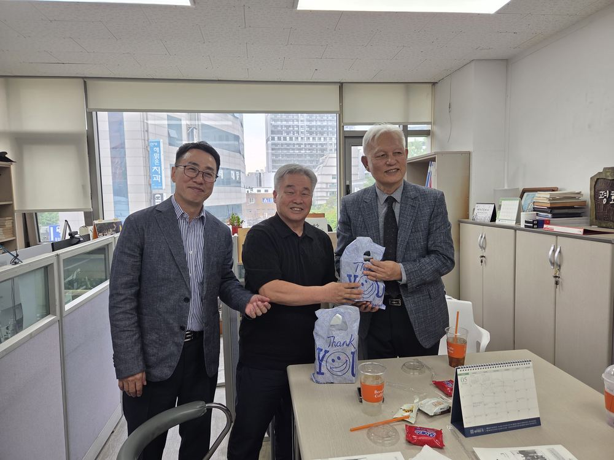
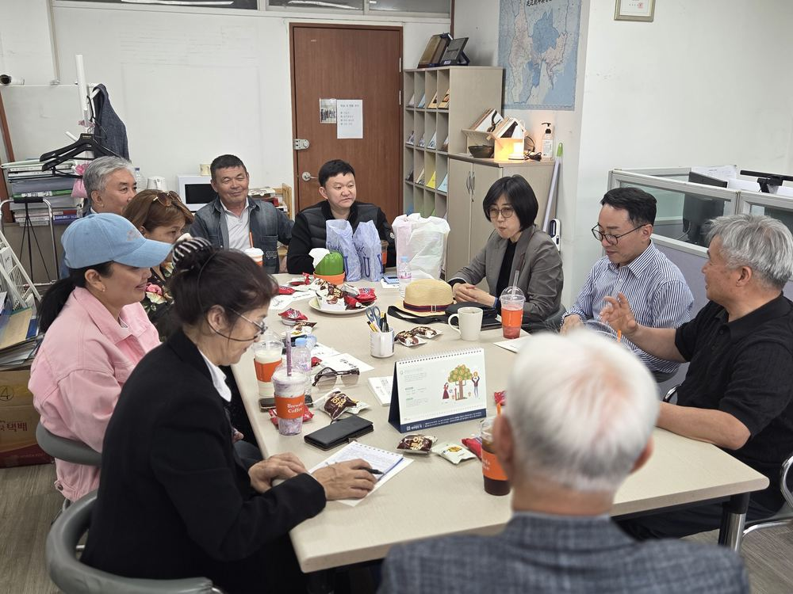
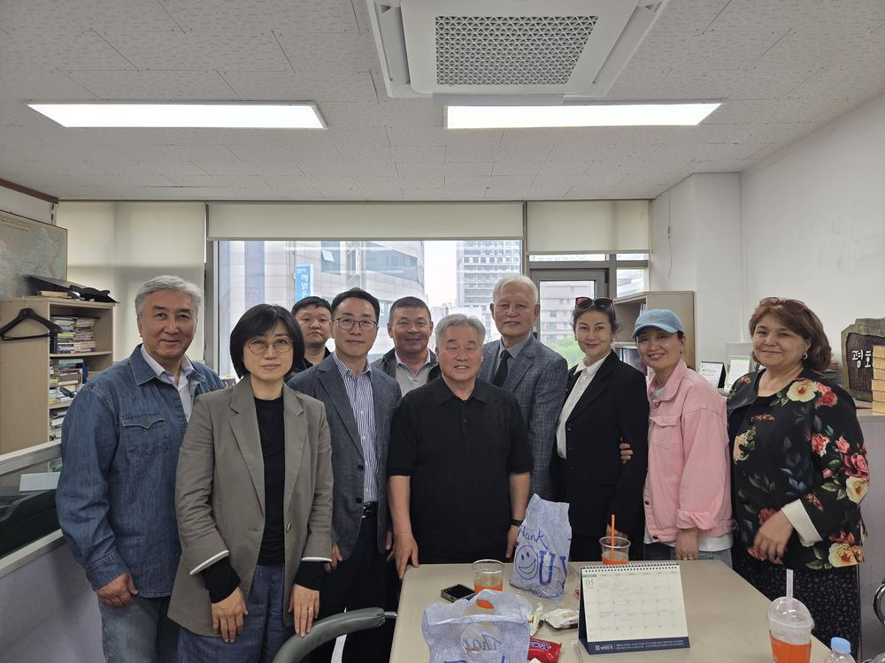
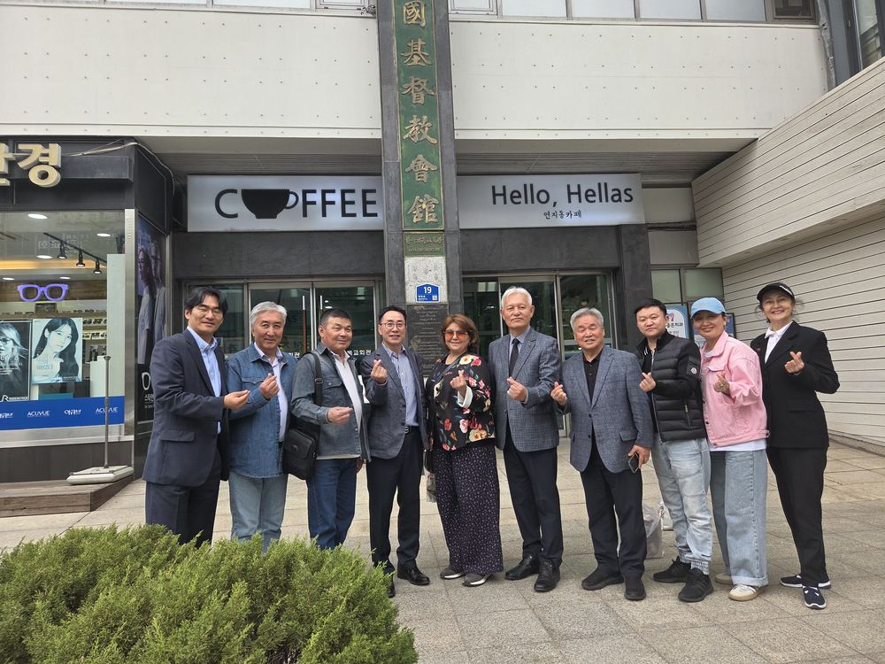
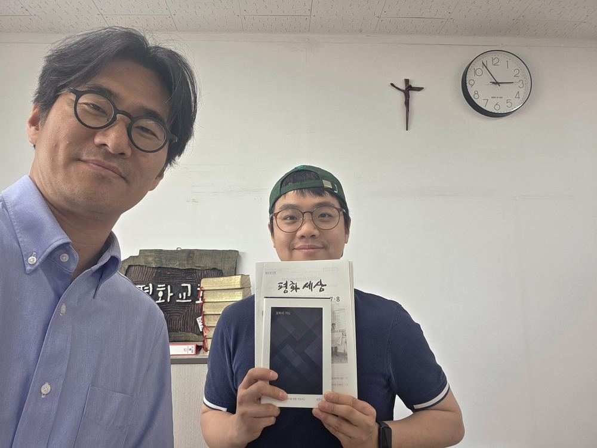
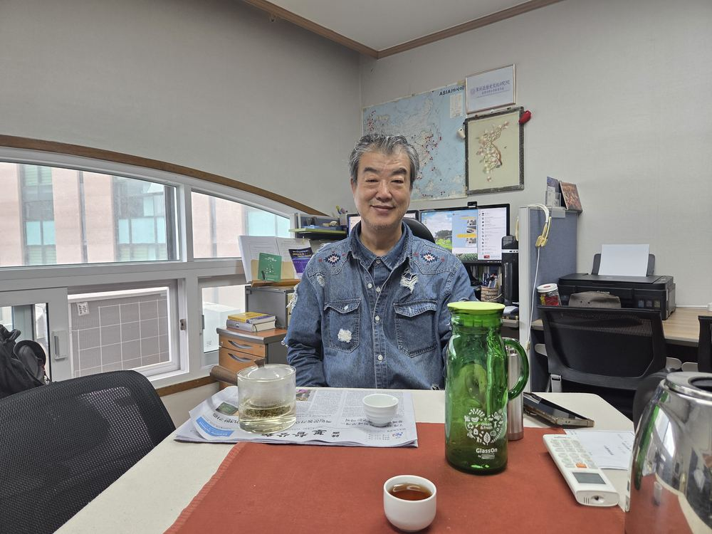
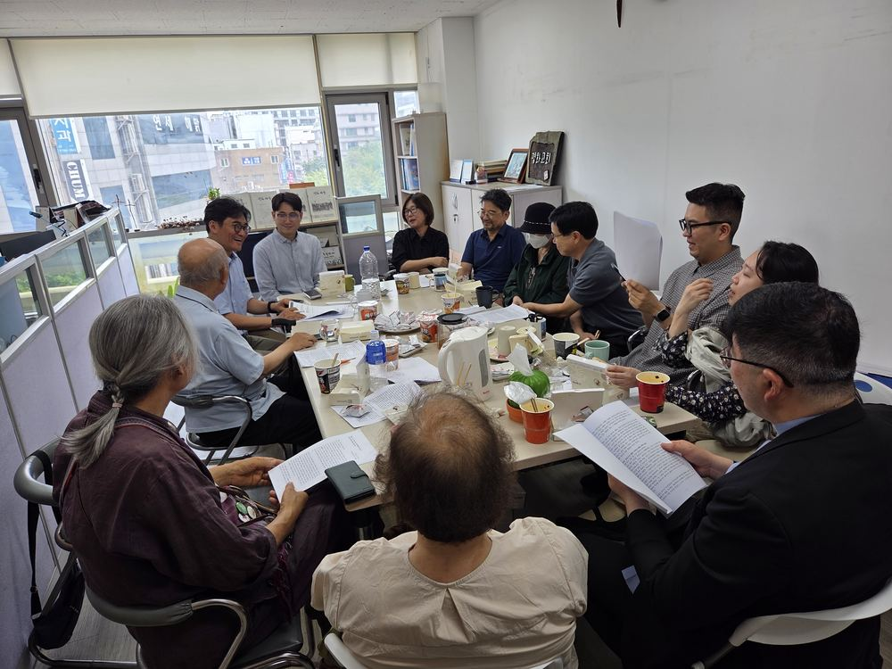
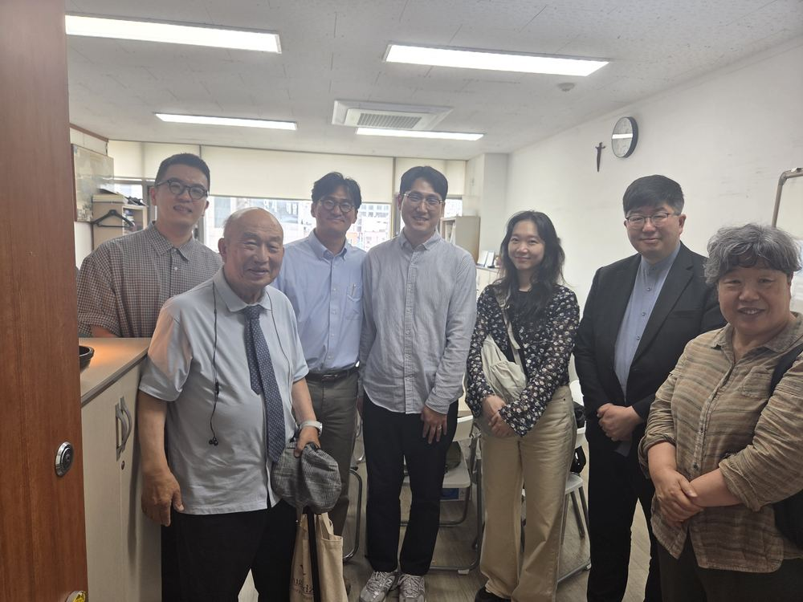
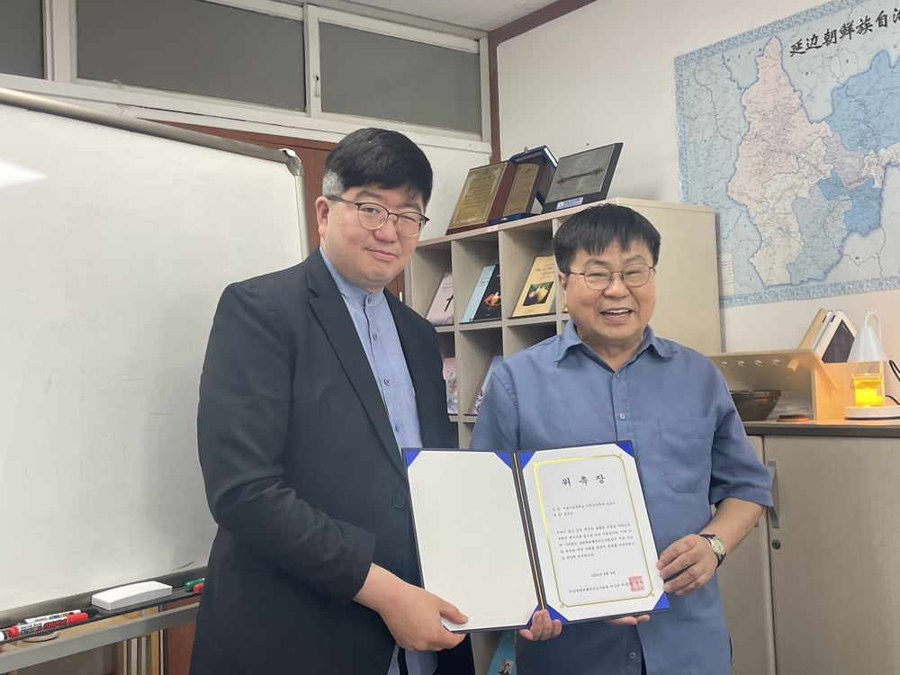
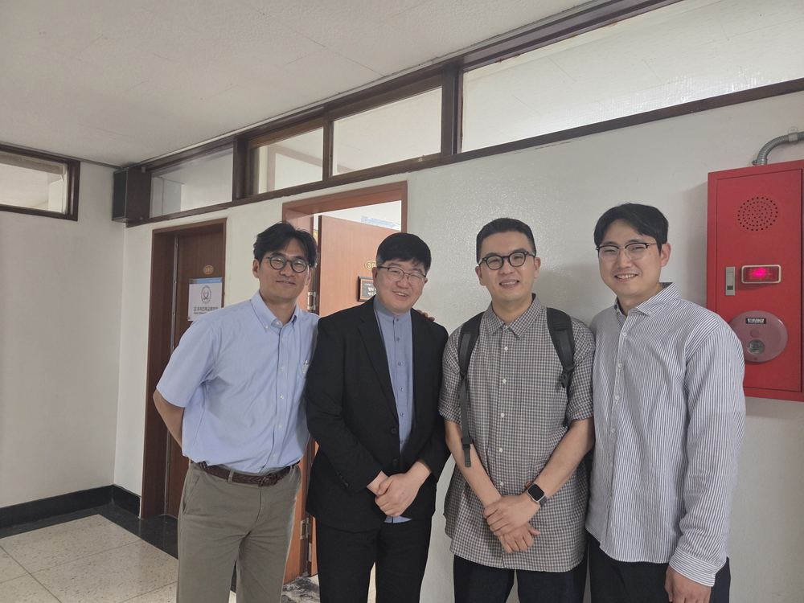
좌측부터 법인 사무총장 김주용 목사(평화교회 담임목사), 홍승만 목사(서울기독대학교 교수), 김기찬 목사(높은뜻정의교회 교육목사), 이우성 목사(수원성교회 교육목사)
법인의 귀한 자료와 도서를 생명살림교회(홍상태 목사)로 이전하며, 법인 이사 홍상태 목사에게 감사의 마음을 전달하며 회원들이 함께 잔치를 나누다.
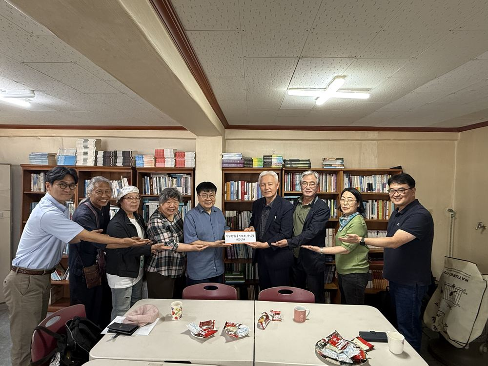
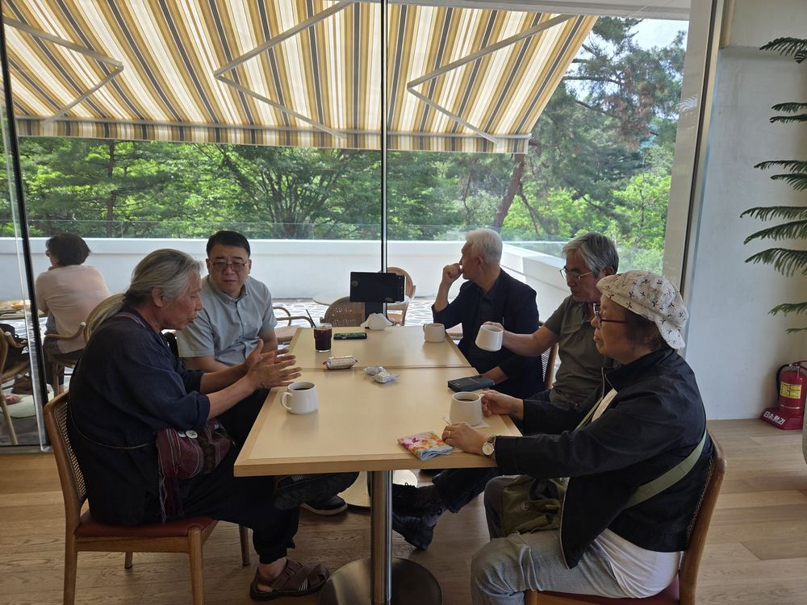
목회 코파일럿 클로드 활용하기 기초편 강의를 법인 간사로 수고하는 김성국 목사가 진행하다. 기초부터 1:1로 자세히 인도해 주었다.
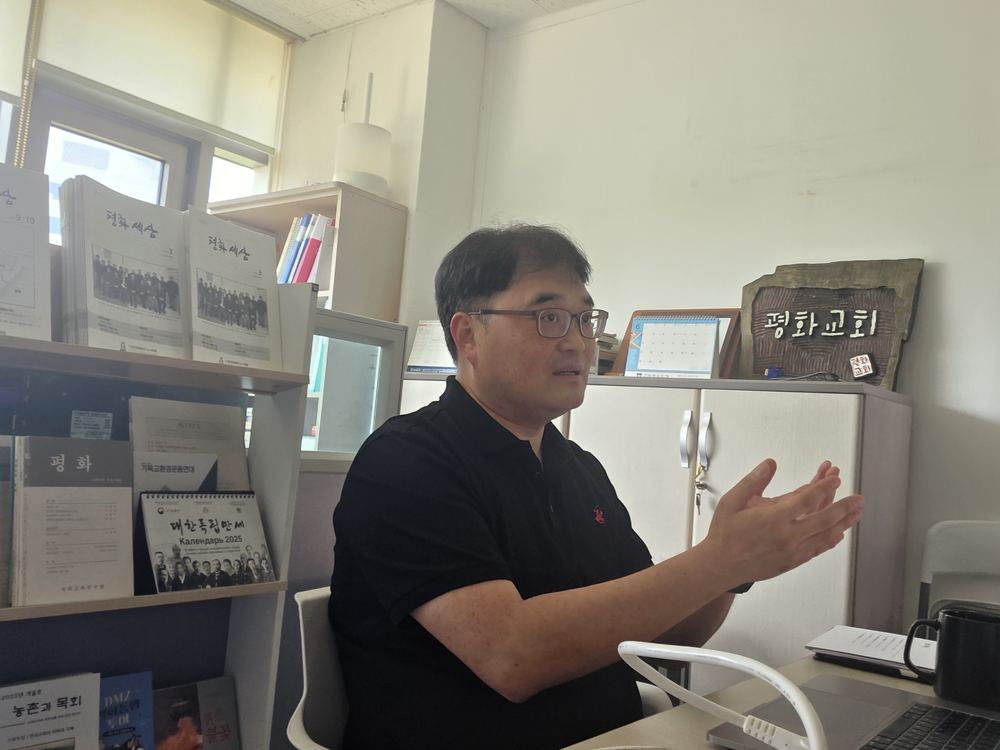
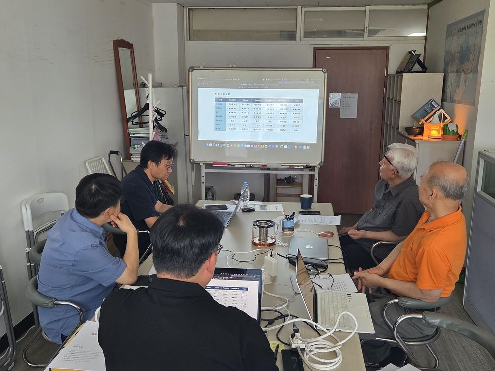
[기억을 지키는 일, 평화를 만드는 일]
현재 저희는 카자흐스탄 고려인 마을들을 방문하며 여러 사역을 이어가고 있습니다. 지난해에는 독립운동가 최재형 선생님의 증손녀인 박엘레나 학생에게 작은 장학금을 전달하였고, 겨울철에는 아직도 석탄 난방에 의존하는 고려인 가정들에 석탄을 지원하였습니다.
하지만 지금 저희가 가장 중요하게 준비하고 있는 일은 카자흐스탄 박박티(Baqbaqty) 마을에 ‘고려인 기억박물관 및 공동체 센터’를 세우는 일입니다. 박박티 마을에는 아직 고려인 어르신들이 살아가고 계십니다. 그러나 젊은 세대는 도시로 떠나고, 시간이 흐를수록 삶의 기억과 역사도 함께 사라지고 있습니다. 어르신들이 평생 간직해 오신 물건들, 삶의 이야기들, 강제이주의 기억들, 신앙의 흔적들, 그리고 독립운동의 역사까지도 기록되지 않으면 사라질 수 있습니다. 저희는 그 기억을 남기고 싶습니다.
그것은 단순히 과거를 보존하는 일이 아니라, 한 민족의 존엄과 신앙, 그리고 평화의 역사를 다음 세대에 전하는 일이기 때문입니다. 우리가 추구하는 평화는 단지 갈등이 없는 상태가 아닙니다. 하나님의 형상대로 지음받은 인간의 존엄을 지키고, 잊혀가는 사람들을 기억하며, 깨어진 공동체를 다시 이어가는 삶의 방식입니다. 그래서 교회의 예배와 선교, 회복적 정의 운동과 디아스포라 사역은 서로 다른 일이 아니라 하나의 사명이라고 믿고 있습니다.
부족하지만 하나님께서 맡기신 이 길을 계속 걸어가고자 합니다. 사랑하는 동역자 여러분께서도 기도와 마음으로 함께해 주시길 부탁드립니다. 여러분의 관심과 후원, 그리고 기도가 누군가의 삶을 지키고, 사라질 기억을 다음 세대에 남기는 귀한 씨앗이 될 것입니다. 주님의 평화가 여러분의 가정과 삶 가운데 함께하시기를 기도합니다.
이은태 목사(이사장, 제광교회 원로목사), 이근복 목사(목회자 마음돌봄센터 이사장), 임규일 목사(만성교회 원로목사), 임대식 목사(평화교회 원로목사), 고현영 목사(수송교회), 김종언 목사(황지교회), 홍인식 목사(스페인개신교대학교 교수), 홍은해 목사(부평소망교회 담임목사)
강내교회(이은철 목사), 등대선교회(권봉길 목사), 만성교회(전광현 목사), 부평소망교회(홍은해 목사), 부전교회, 분당가나안교회(장경덕 목사), 삼가리교회(김은철 목사), 생명살림교회(홍상태 목사), 서귀포교회(박동국 목사), 수원성교회(이경희 목사), 새빛교회(김용일 목사), 제주 행복한 집(배순옥 목사), 오륙선교회(최태순 목사), 운천제일교회(이세호 목사), 울산교회(이호상 목사), 의정부동부교회(강철 목사), 제광교회(유병택 목사), 제주한림교회(김효근 목사), 참좋은우리교회(한성주 목사), 청운교회(정상식 목사), 포항양학교회(황병기 목사), 파평교회, 평화교회(김재욱 목사), 평화교회(김주용 목사), 황지교회(김종언 목사), 필그림선교교회(미국, 권희창 목사), 만남의교회(미국, 이정현 목사)
강대은-홍정옥, 고영주, 구자남, 권수옥, 김기찬, 김석련, 김석주, 김영미, 김영빈, 김용진, 김정순, 김주용, 김철호-김옥연, 김충호, 김혜란, 배순옥, 변금숙, 신계화, 안홍철, 유희석, 이고은, 이명신, 이복순, 이봉숙, 이생구, 이영애, 이은태-이복순, 장신애, 전은희, 정정훈, 정진구, 조영부, 주혜주, 최상남, 최성숙, 최종우, 한경균, 한덕수, 홍성심, 황선탁, 황인자, (주)애드스틸, ㈜시터피아, 익명후원자
강경민, 강길종, 강수연, 강성민, 강익수(김진심), 고대현, 고현, 고은희(허종윤), 고연자, 고인숙, 김경종, 김경원, 김광정, 김미자, 김동미, 김동옥, 김명신, 김민탁, 김병철, 김복희, 김봉민, 김삼곤, 김상순, 김석련, 김성식, 김수경, 김응희(현영실), 김영실, 김용진, 김은희, 김예선, 김진심, 김정옥, 김재숙(이주영), 김호남, 김형숙, 김태희, 모연섭, 문지혜, 박금미, 박명자, 박성훈, 박영심, 박정주, 박원하(변금숙), 박종대, 박지현, 박찬임, 박희경, 부혜영, 소현정, 송복임, 신성조(현은선), 신성은(오유미), 신재필, 안갑식, 안성기, 양광신, 양선화, 양옥희, 양유진, 엄진용, 오성철, 오웅진, 오치덕, 유인순, 유희석, 윤미경, 윤성실, 윤무진(송혜경), 이남희, 이도숙, 이미숙, 이선경(김재근), 이성덕, 이성철, 이승우, 이은성(김양숙), 이화자, 이혜린(양수용), 이혜은, 전유진, 전은순, 정순자, 정연희, 조영랑, 진민경, 진영순, 주혜주, 최인덕, 허종윤, 한정훈, 한현지, 현혜경, 홍금희, 홍동희, 홍은실(김광정), 홍인선, 황철희, 황희영
사단법인 참된평화를만드는사람들은 기독교 관점에서 평화 사역을 하기 위해서 설립된 NGO입니다. 평화를 만들기 위한 연구, 교육, 사업이 균형을 이룰 수 있도록 한국 사회와 동북 및 중앙 아시아 지역에 나눔과 봉사를 통해서 평화를 만들어 가고 있습니다.
1. 평화를 만드는 연구와 교육
1) 평화연구 — 평화와 통일을 위한 연구 / 평화 세미나, 평화를 만드는 기독교와 교회 연구
2) 평화교육 — 한민족 평화와 화해 교육, 평화 기행을 통한 평화 만들기 교육, 평화를 위한 회복적 정의 교육
2. 평화를 만드는 사역과 사업
1) 한인 디아스포라 지원 사업 — 중국 조선족 장학지원 사업, 카자흐스탄 고려인 석탄지원 사업, 고려인 독립운동가 후손 장학사업, 고려인 청소년 교류사업
2) 동포 나눔 사업 — 라진·선봉 지역 주민 쌀, 토끼, 오리 지원사업, 북한 오리농장 지원 사업
정기후원 — 후원자님의 은행 계좌에서 지정하신 날짜에 자동 이체됩니다.
일시후원 — 정기후원자를 포함한 모든 분들이 언제든 참여 가능합니다.
물품후원 — 도움이 절실히 필요한 한인 디아스포라 이웃에게 꼭 필요한 물품을 지원합니다.
예금주 (사)참된평화를만드는사람들
“평화를 위하여 일하는 사람은 행복하다. 그들은 하나님의 자녀가 될 것이다!”— 마태복음 5장 9절
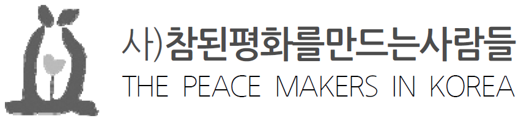